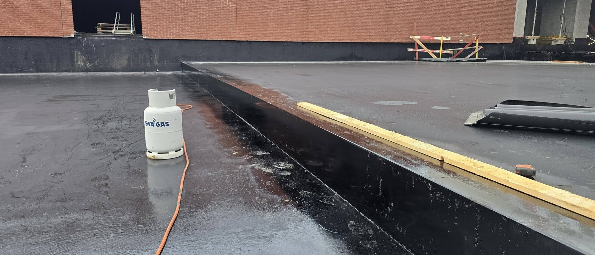

Garaże i przybudówki
Małe połacie, często kryte lata temu jedną warstwą papy. Zwykle da się je zrobić w jeden albo dwa dni.

Dom, garaż, przybudówka, hala albo budynek usługowy. Warstwy układamy w takiej kolejności i z takich materiałów, jakich wymaga podłoże pod nimi.
Małe połacie, często kryte lata temu jedną warstwą papy. Zwykle da się je zrobić w jeden albo dwa dni.

Stropy nad częścią mieszkalną, gdzie przeciek od razu widać na suficie. Tu najbardziej liczy się staranność przy detalach.

Duże powierzchnie na blasze trapezowej, z klapami dymowymi, wentylacją i kilkunastoma wpustami do obrobienia.
Pokrycie to ostatnia warstwa z kilku. Jeżeli któraś niżej jest mokra albo źle ułożona, sama wymiana papy na wierzchu niczego nie załatwi.
Strop betonowy, blacha trapezowa albo deskowanie. Sprawdzamy nośność i to, czy powierzchnia jest sucha i równa.
Warstwa zatrzymująca parę wodną idącą z pomieszczeń. Bez niej wilgoć skrapla się w ociepleniu i zostaje tam na lata.
Styropapa, wełna albo płyty PIR, docięte tak, by uformować spadek w stronę wpustów.
Papa w dwóch warstwach albo membrana w jednym arkuszu, razem z obróbkami attyk, wpustów i przebić.
Nie ma jednej odpowiedzi dobrej dla każdego dachu. Poniżej różnice, które realnie decydują o wyborze.
Układamy papę podkładową i wierzchniego krycia z posypką mineralną. Dobrze znosi ruch pieszy przy przeglądach i łatwo ją miejscowo naprawić po latach.
Membrana dochodzi na dach w dużym płacie, więc na środku połaci nie ma łączeń. Zachowuje elastyczność przy mrozie i pracuje razem z podłożem.
Szybki montaż i wygodne obrabianie detali. Przy styku ze styropianem trzeba zastosować warstwę rozdzielającą, bo materiały wchodzą ze sobą w reakcję.
Membrany, które nie tracą plastyfikatorów z czasem i mogą leżeć bezpośrednio na styropianie. Zgrzewa się je tak samo jak PVC.
Jeżeli izolacja pod papą jest sucha, a warstwy trzymają się podłoża, nowe pokrycie można ułożyć na starym. Wychodzi taniej i szybciej, bo odpada wywóz gruzu i ryzyko, że dach zostanie otwarty na noc przed deszczem.
Zrywamy wtedy, gdy ocieplenie nasiąkło wodą, warstw jest już kilka jedna na drugiej albo stropowi grozi przeciążenie. To się sprawdza sondą i odkrywką, nie na oko z poziomu podwórka.

Podaj wymiary i rodzaj budynku, a umówimy termin oględzin. Po wejściu na dach dostaniesz zakres prac wraz z ceną.